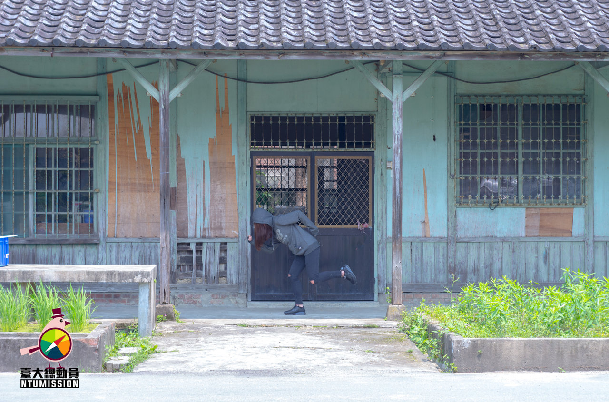

#NTUI01
你對轉型正義了解嗎？來打卡並瞭解相關議題吧！（拍照上傳）
#NTUI02
由學生會學術部舉辦，報名資訊請上粉專。（參加並拍照上傳）
#NTUI03
有沒有好奇活大的飄揚歌聲是哪來的呢？5／10、5／12，一起來活大禮堂戶外木板區聽音樂吧！（拍照上傳）
#NTUI04
最喜歡花火的哪篇文章呢，分享並截圖讓我們知道！（截圖上傳）
#NTUI05
花火的實體雜誌散佈在校園各個角落，你找得到嗎？（找到並拍照上傳）
#NTUI06
學代會每兩週都會開會討論學校中的大小事務，想了解嗎？來旁聽看看吧！（旁聽學代會並拍照上傳）
#NTUI07
什麼你不知道！？原來買保險套這麼方便，找到這些地點，一起宣揚安全性行為的觀念吧！（與保險套／指險套販賣機合照）
#NTUI08
你對性別意識了解嗎？找一本書來閱讀吧！（與一本性別相關的書籍拍照上傳）
#NTUI09
由臺大學生會性別工作坊舉辦，報名資訊請上活動粉專。（參加並拍照上傳）
#NTUI10
由臺大學生會性別工作坊舉辦，報名資訊請上活動粉專。（參加並拍照上傳）
#NTUI12
把發票捐給需要的人吧！（拍照上傳）
#NTUI13
小心！有動物！你有注意過校園中的告示牌嗎？（拍照上傳）
#NTUI14
你瞭解臺大的鳥類嗎？嘗試拍下他們吧！（拍照上傳）
#NTUI15
你瞭解臺大的動物嗎？嘗試拍下他們吧！（拍照上傳）
#NTUI16
由學生會學術部舉辦，報名資訊請上粉專。（參加並拍照上傳）
#NTUC01

找到指定的地點並做一個動作拍照
#NTUC07

找到指定的地點並做一個動作拍照
#NTUC16
臺大共有10棟博物館，分別為:校史館、人類學博物館、地質標本館、物理文物廳、檔案館、昆蟲標本館、農業陳列館、植物標本館、動物博物館、醫學人文博物館，找到當中的3棟拍照並上傳於同篇貼文中，即可完成任務。
#NTUC17
臺大有總圖書館、社科院、醫學院二所學院圖書分館，以及物理、數學、化學、大氣、海洋、生化與圖資等7個系所圖書室。任選其中三處，拍照並上傳於同篇貼文中，即可完成任務。
#NTUC18
藝術季開幕活動將在5/6(五)18:30在振興草皮舉行，當天至開幕活動現場，拍下自己在現場的照片上傳。
#NTUC19
長興附近的夜市是住宿生的天堂，身為臺大生的你怎麼能不去一探究竟？到男一夜市中選擇一項自己喜愛的宵夜，並將自己吃得經津津有味的樣子記錄下來吧！（拍照上傳）
#NTUC20
在臺大中想必你上過不少的課程，哪門課的老師最深的你心呢？用這次臺大總動員的機會，鼓起勇氣跟教授合照吧！（拍照上傳）
#NTUC21
在總圖的某層樓中藏著看電影的地方，你是否有去過呢？若是沒有，何不藉這這次的機會讓自己前往一探究竟！（拍照上傳)
#NTUC22
你是否看不慣亂停的腳踏車？是否深深覺得水源阿伯每日搬腳踏車十分辛苦，同時維持臺大腳踏車停車的秩序相當帥氣呢？協助水源阿伯吧，成為維護校園的搬車小助手。（拍照或影片上傳）
#NTUC23
臺大中其實藏著蒸飯箱你知道嗎？找到他們並帶著自己的便當使用看看吧！（拍照上傳）
#NTUC24
亂停的腳踏車經常是臺大校園中的亂象，為了讓我們的校園變得更加美麗，伸出援手吧!將那些混亂化為秩序，讓我們的校園回歸原有的美麗。（拍照或影片上傳）
#NTUC25
望著醫學院大廳角落的那台鋼琴，你是否曾經蠢蠢欲動想坐在琴台前演奏動人音樂卻裹足不前呢？別猶疑，快坐上鋼琴台前為大家演奏一曲吧！（注意事項：使用時間為平日早上六點到八點、下午五點到晚上十一點、假日下午六點至晚上十一點。）（照片或影片上傳）
#NTUC26
位於總區小福與臺大醫院下的理髮部有著與現代髮廊不同的復古風味，身為一名臺大生在離校前都該進去給阿姨設計一次頭髮，留做紀念！
#NTUC27
傳說中，如果一群人在短時間內一直數傅鐘21饗就可以破除魔咒，讓我們還驗證傳奇吧！
#NTUL01
多久沒有早起運動了！動動身體燒燒熱量吧！（拍照上傳）
#NTUL02
所有系所每年都會有的共通回憶，自己系或別人系的之夜，去參加吧！（一張有自己的照片）
#NTUL03
最喜歡臺大哪裡呢？po出美的瞬間或是感動人心的一幕吧。（上傳照片或影片）
#NTUL04
三餐都在外，動手做做便當、蛋糕、餅乾給自己吃吧！（拍照上傳）
#NTUL05
每餐都大魚大肉嗎？吃點健康的蔬果吧！（拍照上傳）
#NTUL06
愛惜環保、友善環境，用自己的餐具吃飯吧！（拍照上傳）
#NTUL07
進入自己的系所有什麼收穫或體悟想要跟別人說的嗎？用三句話介紹自己的系吧！（上傳三段文字）
#NTUL08
拍下至金色三麥用餐的合照，即可過關！
#NTUL09
每個週都有自己的風格與特色，一起來看看吧！
#NTUL10
tag 5個沒玩過朋友並跟他說這個活動有多好玩！
#NTUF01
校園安全你我有責，戴全罩式安全帽保護頭部，提醒大家注意校園安全！（拍照上傳）
#NTUF02
點餐是一件再自然不過的事情了，嘗試使用中文與英文以外的語言點餐吧，並錄影記錄下來讓我們知道！（影片上傳）
#NTUF03
校園內的建築物在閉館時總是撥放著臺大校歌，聽到此曲響起是否激起了你的愛校之心呢？拍下自己對嘴唱校歌的影片吧！並且用誇張動作提醒同學，該離館囉！（拍下影片、需有誇張表情）
#NTUF04
你是不是下課看見黑板上的字就會不自覺想要往上衝呢？不要忽略自我內心的衝動，上吧，你就是臺大最佳板哥／姊！（拍照上傳）
#NTUF05
「我可能不會唱，但很會演。」錄下一段自拍對嘴的影片吧！（影片上傳）
#NTUF06
有沒有覺得每天照鏡子髮型好像就那麼幾個，把頭髮理成跟NTU有關的髮型吧！讓你成為眾人注目的焦點！（拍照上傳）
#NTUF07
「欸欸快到了嗎」「嗚嗚我遲到了」「我用跑的都比你腳踏車快」，等等，你知道你用跑的多久才可以跑完嗎？來挑戰吧！（錄一段影片）
#NTUF08
到底舟山路有多長呢，用腳程來測試吧！（錄一段影片）
#NTUF09
有沒有遇過很認真備課，很喜歡教學風格的老師呢？對他表達感謝之情吧！（錄一段影片）
#NTUF10
把自己做成可愛的貼圖給朋友看看吧。（錄一段影片）
#NTUF11
「呦呦鹿鳴，食野之苹。我有嘉賓，鼓瑟吹笙。」（影片上傳）
#NTUF12
「怎麼這麼巧，我與你真有緣。」，找到和自己名字一樣的人吧！（拍照上傳）
#NTUF13
學霸，是你？po出一張期中、期末考的考卷或是學期成績。（照片上傳）
#NTUF15
「我也跟你太有緣了吧！」找到另外兩個學號跟自己一樣的人！（照片上傳）
#NTUF16
（限公館、台大店）限時10分鐘內吃完浩克吃的堡套餐，若挑戰成功，餐點免費招待，失敗則需付費（原價790元）
#NTUF17
霍格華茲臺大分校：拿起你的魔棒，對路人練習魔法，大喊「整整—石化」（上傳影片）
#NTUF18
（從耳熟能詳的Lucy，到國高中的健康操你還記得哪些呢？動一動身體吧！（影片上傳）
#NTUE01
與好友們拍攝可愛逗趣的鬼臉照吧，找出誰才是真正的鬼臉大師！（拍照上傳）
#NTUE02
社團為大學三大學分之一，在社團中你學習到了什麼？社團中又有什麼值得分享的社課呢？拍下照片介紹你的社團吧！（拍照上傳）
#NTUE03
還記得當年是什麼樣的契機使你加入系隊嗎？新生盃？直屬的推薦？或是你原本對此就有興趣呢？不管怎樣，相信在系隊或許都在你的大學生活中佔有一部份的回憶吧！分享一張系隊練習或比賽的照片吧！（拍照上傳）
#NTUE04
你多久沒有對一個人表達你的心意，送禮物和小卡給一個重要的人，記錄下那溫馨的一刻並讓我們知道吧！（拍照或影片上傳）
#NTUE05
家人陪伴著我們數十年，或許日常生活中有些小磨合，或許有些重要溫暖的時刻，嘗試打電話給家人說聲我愛你吧，並開擴音讓我們知道他們的反應！（需要開擴音）（影片上傳）
#NTUE06
忙碌的課業與活動塞滿了你的生活，在你多久沒回家坐在餐桌上與家人一同吃飯了呢？找一天回家跟家人吃飯吧，並跟我們分享那溫暖的畫面。（拍一張和家人吃飯的照片）
#NTUE07
過去的他／她是否許久不見了？曾經最了解彼此的你們是否還有些話想說說呢？吃個飯吧！或許這次的契機可以讓彼此對感情更有收穫。（拍照上傳）
#NTUE08
當兩個在你生命歷程中都很重要的人與你一起見面，會有什麼火花呢？面對感情，讓我們都變成更好的人吧。（拍照上傳）
#NTUE09
還記得童年時候的你嗎？與現在相差無幾，或是男女大十八變呢？分享一張你小時候的照片吧，讓我們一同見證你從過去至今的變化。（一張有自己的照片）
#NTUE10
你想要變成怎樣的自己，做什麼事情？把你的夢想勇敢的說出來，激勵自己努力實踐吧！（影片上傳）
#NTUE11
是什麼讓你不斷成長，又是什麼讓你不斷謹惕自己，告訴我們影響你最深的一句話吧！（拍照上傳）
#NTUE12
大學、研究所生涯匆匆就過去了，為自己留下一張課堂的照片吧！（拍照上傳）
#NTUE13
有什麼朋友一直擺著沒有使用讓你看不下去的東西嗎？使用KKTOWN軟體，拍一段影片介紹這個產品並上架賣出，將影片po在活動頁面吧！（需徵得朋友同意）（影片上傳）
#NTUE14
有什麼是爸媽送的但卻用不到的東西？使用KKTOWN軟體，拍一段影片介紹這個產品並上架賣出，將影片po在活動頁面吧！（影片上傳）
#NTUE15
有什麼是前男女朋友送的東西讓你看了就想賣掉？使用KKTOWN軟體，拍一段影片介紹這個產品並上架賣出，將影片po在活動頁面吧！（影片上傳）
#NTUI01
與陳文成事件紀念廣場立牌拍照
難度: 進階
#NTUI02
5／4學術部言論自由講座
難度: 挑戰
#NTUI04
分享花火一篇最愛的文章
難度: 一般
#NTUI07
找到販賣保險套／指險套的地點
難度: 一般
#NTUI08
在圖書館找一本性別相關的書籍
難度: 進階
#NTUI09
5／2突破 — 台海兩岸同志運動對談
難度: 挑戰
#NTUI10
【愛自在】性別友善廁所工作坊
難度: 挑戰
#NTUI13
找到臺大中與野生動物有關的告示
難度: 進階
#NTUI16
5/11 原住民與國家法體制
難度: 進階
#NTUI17
國立台灣大學植物培育溫室新建工程 說明會
難度: 挑戰
#NTUI18
舊機械工程館指定為歷史建築及工綜新館新建工程設計調整 說明會
難度: 挑戰
#NTUI19
瑠公圳舊址復原及小椰林道段渠道景觀工程第一期細部設計公聽會
難度: 挑戰
#NTUL03
po一張最喜歡臺大的照片或影片
難度: 一般
#NTUL05
一餐吃五種顏色的蔬果
難度: 挑戰
#NTUL06
外食自帶餐具（碗跟筷子）
難度: 進階
#NTUF01
戴全罩安全帽騎腳踏車
難度: 進階
#NTUF02
用英文和中文以外的語言點餐
難度: 進階
#NTUF04
一下課就衝上講台幫老師擦黑板
難度: 進階
#NTUF05
自拍對嘴影片並放上網
難度: 進階
#NTUF07
7分鐘內從臺大正門跑到法律系霖澤館
難度: 挑戰
#NTUF08
5分鐘內從舟山路的頭跑到長興街上的警衛室
難度: 挑戰
#NTUF09
下課後揪到共三個人一起起立立正謝謝老師
難度: 挑戰
#NTUF10
模仿ＦＢ動態貼圖動作
難度: 進階
#NTUF12
找到與自己相同名字的人
難度: 進階
#NTUF14
在學習開放空間跳無聲舞
難度: 挑戰
#NTUF15
找到3個學號末兩碼跟自己一樣的人
難度: 挑戰
#NTUF16
去發福廚房挑戰「浩克吃的堡」
難度: 挑戰
#NTUF17
對路人大喊「整整—石化」
難度: 挑戰
#NTUF18
在小福前跳健康操（至少一分鐘）
難度: 挑戰
#NTUE07
和前男／女友一起吃飯
難度: 進階
#NTUE08
前男／女友＋現任一起吃飯
難度: 挑戰
#NTUE13
一個想幫朋友賣的東西
難度: 挑戰
#NTUE15
賣一個前男女朋友送的東西
難度: 挑戰